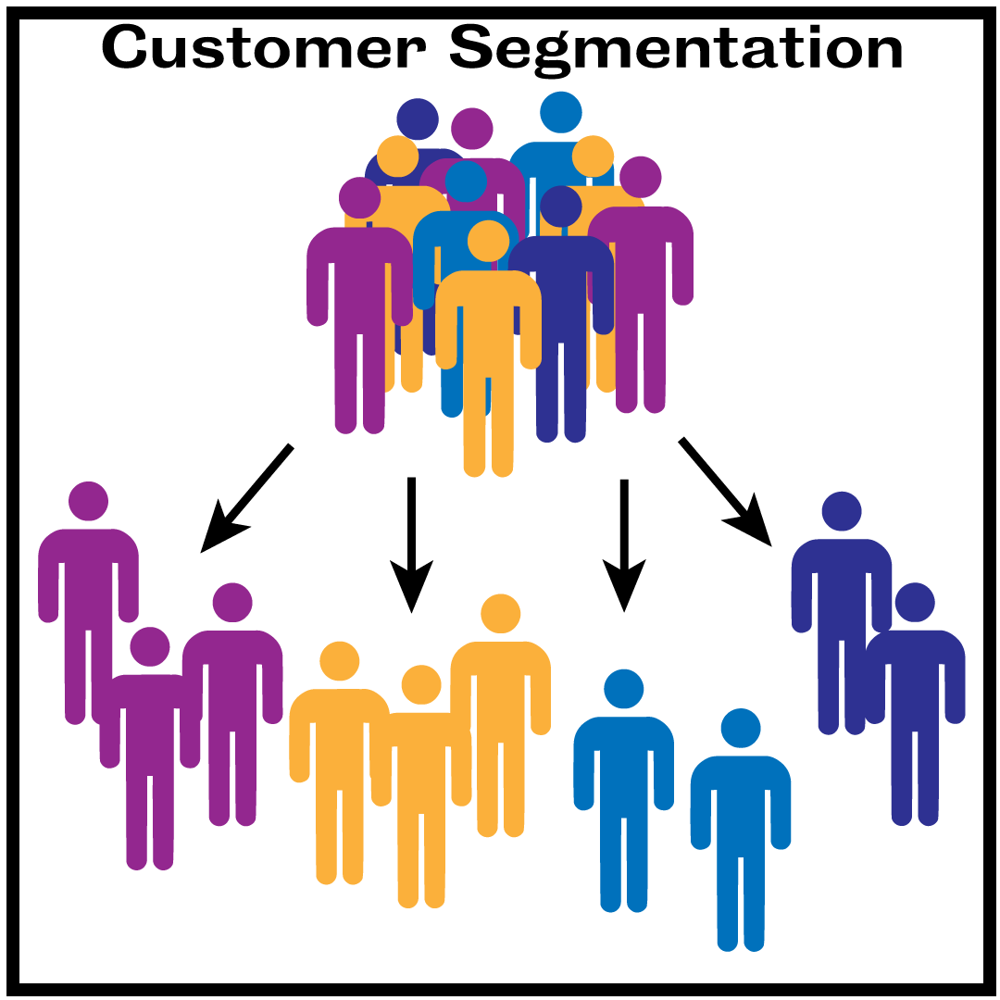

Segment Customers by Time Cohorts using Python
Background Info

Allows a business to gain insights into customer groups.
Intelligence enables business to respond to their needs.
Using python to segment customers is a powerful, scalable tool.

The data for this post was obtained from the UCI Machine Learning Repository. The Online Retail dataset is a transnational data set that contains the transactions occurring between 01/12/2010 and 09/12/2011 for a UK-based and registered non-store online retail store. The dataset contains 541,909 instances, and 8 attributes.
Customer Segmentation:
is the process of dividing customers into mutually exclusive groups based on common characteristics so that companies can gain getter insights on their behaviors, and respond with targeted marketing campaigns.
Customers can be segmented into various cohorts depending on the characteristic of interest, and the business goals. Some of the key descriptors include geography, demographics, psychology, behavior, size, and time.
Why is this important?
The goal of this project
is to highlight how customers can be segmented into time cohorts using python, and specifically:
- How to assign a customer to a cohort period
- How to determine the number of monthly active customers by cohort
- How to calculate and visualize customer retention by time cohort
- How to calculate and visualize average quantity purchased by time cohort
- How to calculate and visualize average spent by by time cohort